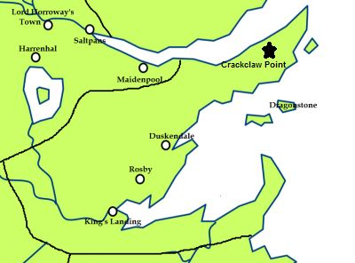

Whispers
The Whispers is a ruined castle on Crackclaw Point. It is an ancient seat of House Crabb. It is an ancient, downtrodden castle that sits on the edge of cliff. The castle is overgrown with forest. The beacon tower collapsed when Dick Crabb was a boy and now sits in the sea below the castle. The “Whispers” for which the castle is named is actually the sound of the sea pouring into holes made in the cliff.
The seat of Ser Clarence Crabb, a fabled knight from Crackclaw Point, the Whispers got their name from the whispering heads of the victims of Ser Clarence. Whenever Ser Clarence would kill a man he would cut off their head and bring it back to his castle to his wife. There, she would kiss the head and bring it back to life. The heads would then talk to each other, creating the whispering sound. The heads were from wizards, lords, pirates and one was a former King of Duskendale. The heads gave Ser Clarence counsel. The castle has been a ruin for a thousand years.
Map on Next page.
